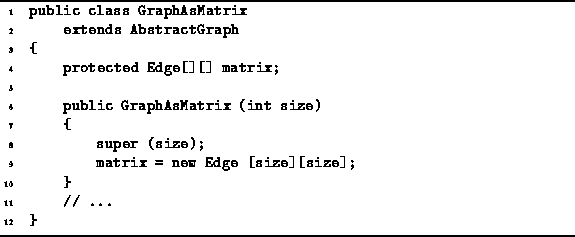

Data Structures and Algorithms
with Object-Oriented Design Patterns in Java
Data Structures and Algorithms
with Object-Oriented Design Patterns in Java
The GraphAsMatrix is introduced in Program  .
The GraphAsMatrix class extends
the AbstractGraph class introduced in Program .
.
The GraphAsMatrix class extends
the AbstractGraph class introduced in Program .

Program: GraphAsMatrix fields and constructor.
Each instance of the GraphAsMatrix class
represents an undirected graph, say  .
The set of vertices,
.
The set of vertices,  , is represented using
the vertex array inherited from the AbstractGraph base class.
Each vertex is represented by a separate GraphVertex instance.
, is represented using
the vertex array inherited from the AbstractGraph base class.
Each vertex is represented by a separate GraphVertex instance.
Similarly,
The set of edges,  , is represented using
the matrix field which is a two-dimensional array of Edges.
Each edge is represented by a separate GraphEdge instance.
, is represented using
the matrix field which is a two-dimensional array of Edges.
Each edge is represented by a separate GraphEdge instance.
The GraphAsMatrix constructor takes a single argument
of type int that specifies
the maximum number of vertices that the graph may contain.
This quantity specifies the length of the
array of vertices and the dimensions of the adjacency matrix.
The implementation of the GraphAsMatrix class is left
as programming project for the reader (Project ).
 Copyright © 1998 by Bruno R. Preiss, P.Eng. All rights reserved.
Copyright © 1998 by Bruno R. Preiss, P.Eng. All rights reserved.